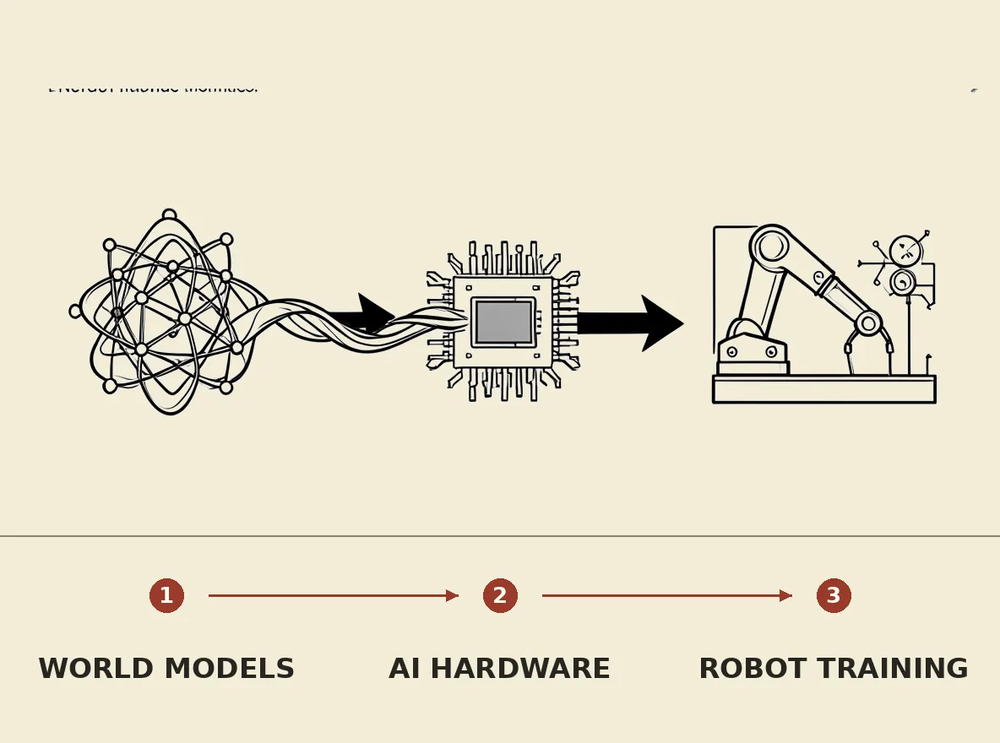

AMD is acquiring World Labs, a leading developer of deep learning models for understanding physical reality, in an $8.2 billion deal. This acquisition aims to integrate World Labs' frontier workloads into AMD's chip-making roadmap and scale its technical breakthroughs beyond the lab by getting closer to hardware. The move is expected to significantly bolster AMD's competitive position against Nvidia in creating an ecosystem for AI-specific chips, particularly for deploying generative AI models on robotic platforms through synthetic data.